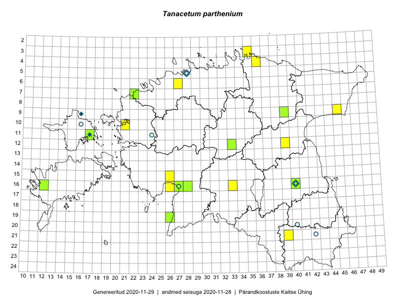

Tanacetum parthenium
Uuendatud: 2016-12-02
Kaardile koondatud taksonid: Tanacetum parthenium (L.) Sch.Bip.

Kaart põhineb 6 vaatlusel. Taksonit on leitud 5 ruudust.
Viited andmebaasikirjetele
- Peedu Saar, Liina Oja: 2015-07-24: 09-45: GPS punkt
- Rein Kalamees, Kersti Püssa: 2015-09-02: 04-36: GPS punkt
- Peedu Saar, Eerik Leibak: 2015-08-16: 12-39: GPS punkt
- Eeva-Maria Jeletsky, Tarmo Niitla: 2015-06-17: 11-17: GPS punkt
- Eeva-Maria Jeletsky, Tarmo Niitla: 2015-06-17: 11-17: ala
- Sander Laherand, Ott Luuk, Nele Jõessar: 2016-07-26: 03-35: GPS punkt